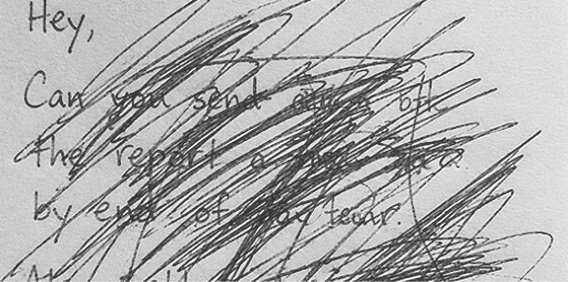

THE PERFECTION TRAP
WHEN GOOD ENOUGH IS NEVER ENOUGH. WE WERE TAUGHT THAT FLAWS ARE FAILURES. THAT THE ROUGH EDGES NEED SANDING, THE CRACKS NEED FILLING, THE SELF NEEDS FIXING — BEFORE WE CAN BEGIN.

우리는 종종 실패를 부끄러운 것으로 여기고, 숨기려 합니다. 하지만 모든 위대한 성취 이면에는 수많은 실패의 흔적이 존재합니다. 실패는 끝이 아니라 새로운 시작을 위한 중요한 단서입니다. 덮어두고 싶은 흑역사를 꺼내 기록하고 분석해보세요. 그 속에서 뜻밖의 해결책이나 나아갈 방향을 찾을 수 있습니다. 당신의 용기 있는 실패를 응원합니다.
[회복탄력성]
실패를 딛고 다시 일어서는 힘
[솔직함]
자신의 한계와 실수를 인정하는 태도
[솔직한 부활]
무너진 폐허 속에서 새로운 가치를 발견하는 일
실패를 숨기지 않고 있는 그대로 기록합니다.
원인을 다각도로 분석하고 패턴을 파악합니다.
핵심 인사이트를 추출하여 다음 행동으로 연결합니다.